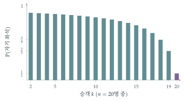

STEP II 2021, 문제 11
다음으로 넘어가기 전에 문제를 먼저 읽어 보자. 이 문제는 OCR에서 내려받을 수 있는 2021년 STEP 문제지 모음(zip 파일)의 STEP II 문제지에 있다: www.ocr.org.uk/Images/696588-2021-past-papers.zip
도입
승객 백 명이 만석인 비행기에 탑승한다. 첫 번째 승객은 탑승권을 잃어버려서 아무 자리에나 앉는다. 그 뒤의 승객은 각자 자기 자리가 비어 있으면 그 자리에 앉고, 그렇지 않으면 비어 있는 자리 중 하나를 무작위로 골라 앉는다. 마지막 승객이 자기 자리에 앉을 확률(probability)은 얼마일까? 혼란이 비행기 전체로 연쇄적으로 번질 수 있으니 확률이 작으리라 예상할 수도 있다. 아니면 대부분의 승객은 영향을 받지 않으니 \(1\)에 가까워야 한다고 생각할 수도 있다.
답은 승객 수와 상관없이 정확히 \(\frac12\)이다. 이 문제는 점화식(recurrence)과 수학적 귀납법(induction)으로 이를 증명한다. 그런데 대칭(symmetry)을 이용한 아름다운 한 줄짜리 논증도 있다. 이 논증은 답이 왜 \(\frac12\)인지 설명해 줄 뿐 아니라, 어느 승객에 대해서든 답을 곧바로 적을 수 있게 해 준다.
시작하기 전에
일어날 수 있는 경우를 모두 나열하여 \(P_2\)와 \(P_3\)을 구하여라.
좌석이 두 개이면 \(T_1\)은 \(S_1\)에 앉거나(그러면 \(T_2\)는 \(S_2\)에 앉는다) \(S_2\)에 앉으며, 각각의 확률은 \(\frac12\)이다. 따라서 \(P_2 = \frac12\)이다. 좌석이 세 개일 때, \(T_1\)이 \(S_1\)에 앉으면(확률 \(\frac13\)) 모두 문제가 없다. \(T_1\)이 \(S_3\)에 앉으면 \(T_3\)은 자기 자리를 잃는다. \(T_1\)이 \(S_2\)에 앉으면 \(T_2\)는 \(S_1\)과 \(S_3\) 중 하나를 무작위로 고르고, \(T_3\)은 \(T_2\)가 \(S_1\)을 고를 때만 자기 자리에 앉는다. 따라서 \(P_3 = \frac13 + \frac13\cdot\frac12 = \frac12\)이다.
차근차근 풀기
단계 1 점화식
\(T_1\)이 \(S_k\)에 앉는다고 하자. 단, \(2 \leq k \leq n - 1\)이다. 승객 \(T_2, \ldots, T_{k-1}\)에게는 어떤 일이 일어나는가? \(T_k\)가 도착했을 때 어느 좌석이 비어 있으며, 이 상황은 더 작은 열차의 경우와 어떻게 비교되는가?
승객 \(T_2, \ldots, T_{k-1}\)은 자기 자리가 비어 있으므로 그 자리에 앉는다. \(T_k\)가 도착하면 빈 좌석은 \(S_1\)과 \(S_{k+1}, \ldots, S_n\)이며, 모두 \(n - k + 1\)개이다. \(T_k\)는 이 중 하나를 무작위로 고르고, 그 뒤로 각 승객은 자기 자리가 비어 있으면 그 자리에, 아니면 무작위로 고른 자리에 앉는다. 이는 좌석이 \(n - k + 1\)개인 원래 문제와 정확히 같다. 여기서 \(T_k\)가 첫 번째 승객의 역할을 하고, \(S_1\)이 \(T_k\)의 “자기” 좌석(누군가 앉으면 모든 것이 정리되는 좌석)의 역할을 한다. 따라서 \(T_n\)이 \(S_n\)에 앉을 조건부 확률(conditional probability)은 \(P_{n-k+1}\)이다.
이제 각각 확률 \(\frac1n\)인 \(T_1\)의 좌석에 대하여 조건을 걸자. \(S_1\)이면 반드시 성공하고, \(S_n\)이면 반드시 실패하며, \(S_k\)이면 성공 확률이 \(P_{n-k+1}\)이다. 따라서 \[P_n = \frac1n\Bigl(1 + 0 + \sum_{k=2}^{n-1}P_{n-k+1}\Bigr) = \frac1n\Bigl(1 + \sum_{r=2}^{n-1}P_r\Bigr). \qed\]
단계 2 답
\(P_2 = P_3 = \frac12\)이다. \(P_n\)을 추측하고 강한 귀납법(strong induction)으로 증명하여라.
주장: 모든 \(n \geq 2\)에 대하여 \(P_n = \frac12\)이다. \(n = 2\)일 때 성립한다. \(2 \leq r \leq n - 1\)에 대하여 \(P_r = \frac12\)이면 \[P_n = \frac1n\Bigl(1 + \frac{n - 2}{2}\Bigr) = \frac1n\cdot\frac n2 = \frac12. \qed\]
단계 3 끝에서 두 번째 승객
더 간결한 논증을 찾아보아라. 마지막에 \(T_n\)에게 남는 좌석은 어느 것인가? \(S_2\)일 수 있을까?
마지막으로 \(T_n\)에게 남는 좌석은 \(S_1\) 아니면 \(S_n\)이다. \(2 \leq k \leq n - 1\)인 \(S_k\)일 수는 없는데, \(T_k\)가 그 자리에 앉았을 것이기 때문이다. 그리고 그 전에 이루어지는 모든 무작위 선택은 \(S_1\)과 \(S_n\)을 대칭적으로 다룬다. 자리를 빼앗긴 승객이 좌석을 고를 때마다 \(S_1\)과 \(S_n\)이 선택될 가능성은 같다. 두 좌석 중 먼저 선택되는 쪽이 결과를 결정하므로, 각 좌석이 남는 좌석이 될 가능성은 같다. 따라서 \(P_n = \frac12\)이다.
같은 논증은 \(k \geq 2\)인 임의의 승객 \(T_k\)에 대해서도 통한다. \(T_k\)는 앞선 어떤 승객이 자기 자리에 앉은 경우에만 자리를 잃는다. 자리 빼앗기는 누군가가 \(S_1\)을 고를 때까지 계속된다. 좌석 \(S_1, S_k, S_{k+1}, \ldots, S_n\)은 \(T_k\)가 도착하기 전에 좌석을 고르는 승객들에게 모두 똑같이 취급되므로, 이 중 가장 먼저 선택되는 좌석은 \(n - k + 2\)개의 좌석 중 어느 것일 가능성이나 같고, \(T_k\)는 그것이 \(S_k\)일 때만 자리를 잃는다. 따라서 \[\mathrm{P}(T_k \text{가 앉는 좌석이 } S_k) = \frac{n - k + 1}{n - k + 2}.\] \(k = n - 1\)일 때(\(n \geq 3\)) 이로부터 \(Q_n = \frac23\)을 얻는다. 또 \(Q_2 = \frac12\)인데, 이때는 \(T_{n-1} = T_1\)이고 이 승객은 확률 \(\frac12\)로 \(S_1\)에 앉기 때문이다.■

돌아보기
더 작은 복사본으로 줄이기. \(T_1\)이 \(S_k\)에 앉은 뒤, 나머지 문제는 좌석 수가 더 적은 같은 문제였다.
강한 귀납법. 점화식에 더 작은 경우가 모두 등장했으므로, 귀납 가정에서 그 모든 경우에 대하여 결과를 가정했다.
대칭 찾기. 좌석 \(S_1\)과 \(S_n\)은 처음부터 끝까지 서로 바꿔도 차이가 없으며, 이 사실이 아무런 계산 없이 \(\frac12\)를 설명해 준다.
숨은 수학
대칭 논증
두 번째 증명은 확률론의 강력한 아이디어의 한 예이다. 두 결과가 무작위 과정의 대칭으로 서로 연결되어 있으면 두 결과의 확률은 같다. 여기서의 과정은 \(S_1\)과 \(S_n\) 중 하나가 선택될 때까지 둘을 구별하지 않으므로, 둘이 끝까지 남을 가능성은 같아야 한다. 대칭 논증은 긴 계산을 단 하나의 관찰로 대신하는 경우가 많다. 다음 몇 절에도 이런 논증이 가득하다. 12.6 절의 동전 한 번 더 던지기, 12.7 절의 토너먼트 대진 추첨이 그렇다.
자리를 빼앗기는 승객은 몇 명인가?
자리를 빼앗기는 승객(자기 자리에 앉지 못하는 승객)의 수도 깔끔하게 다룰 수 있다. \(T_1\)은 \(S_1\)을 고르지 않는 한 자기 자리에 앉지 못하고, \(T_k\)(\(k \geq 2\))는 확률 \(\frac{1}{n - k + 2}\)로 자리를 빼앗긴다. 이를 더하면 자리를 빼앗기는 승객 수의 기댓값(expected value)은 \[\Bigl(1 - \frac1n\Bigr) + \Bigl(\frac1n + \frac{1}{n - 1} + \cdots + \frac12\Bigr) = H_n - \frac1n,\] 으로, 대략 \(\ln n\)이다. \(300\)명이 탄 비행기에서도 혼란은 평균적으로 겨우 여섯 명 정도에게만 영향을 미친다. 여기서도 조화수(harmonic number)가 등장한다(9.11 절).
사고 기술
무작위 과정이 두 결과를 구별하지 못한다면, 두 결과의 가능성은 같다. 두 결과가 처음으로 구별되는 순간을 찾아라.
대학에서는 반사 원리(reflection principle, 9.10 절)에서부터 교환가능성(exchangeability)에 이르기까지 확률론 전반에 대칭 논증이 등장한다. 교환가능성은 확률변수(random variable)의 수열이 어떤 순서로 나열하든 같은 분포(distribution)를 갖는 성질로, 현대 통계학의 상당 부분의 토대가 된다.
더 도전하기
건망증 있는 두 승객. 처음 두 승객이 모두 무작위로 자리를 고른다면, 마지막 승객이 자기 자리에 앉을 확률은 얼마인가?
자리를 빼앗기는 승객. \(n = 3\)일 때 가능한 경우를 모두 나열하여 자리를 빼앗기는 승객 수의 기댓값을 확인하여라.
우회로. 점화식을 이용하여 \(\sum_{r=2}^{n-1}P_r = \frac{n - 2}{2}\)가 대칭 논증과 모순되지 않음을 보여라.
마지막 좌석. 마지막 승객이 자기 자리에 앉지 못했다는 조건 아래에서, 마지막 승객이 \(S_1\)에 앉을 확률이 \(1\)임을 보여라. 왜 그런가?
더 읽을거리
Peter Winkler, Mathematical Puzzles: A Connoisseur’s Collection (A K Peters). 수학 퍼즐 모음집. 비행기 좌석 퍼즐을 비롯하여 대칭으로 풀리는 여러 퍼즐이 실려 있다.
Frederick Mosteller, Fifty Challenging Problems in Probability (Dover). 확률 문제 50선. 고전적인 문제 모음집이다.
Joseph Blitzstein & Jessica Hwang, Introduction to Probability (CRC Press; 온라인 무료 공개). 확률론 입문서.